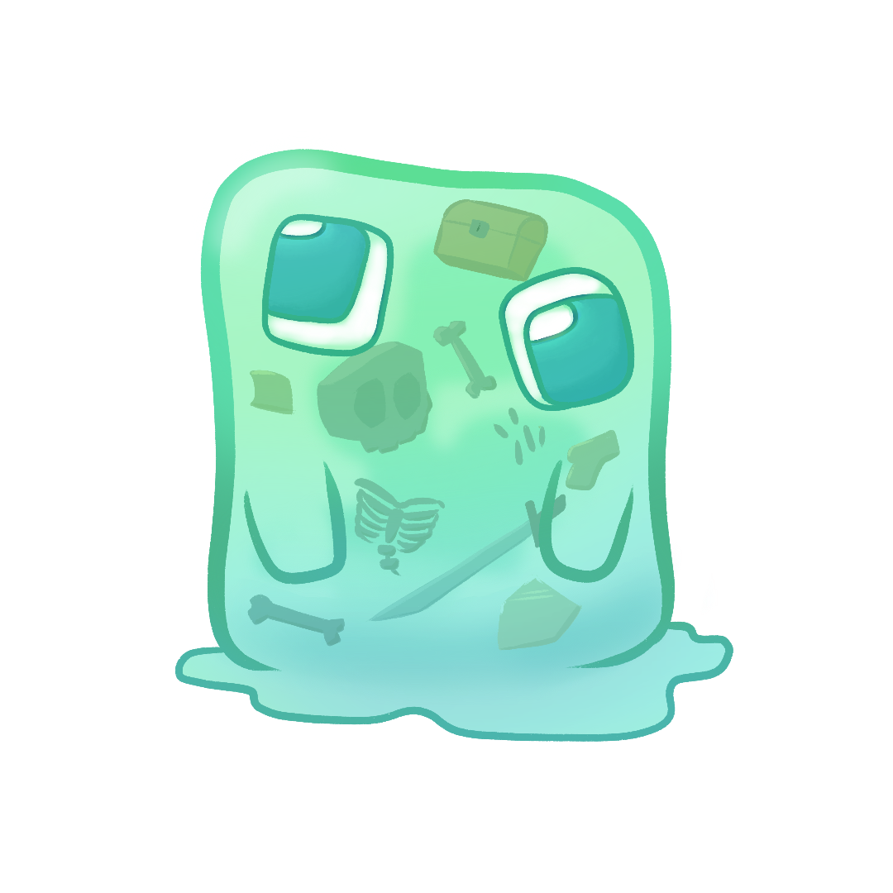

Allow me to recall a short story
This is actually a story from a video game I played
A man was wandering through the woods and came across the oldest and wisest trees of the forest.
He asked the old trees if they would lend him a branch so that he can fassion a tool. The old trees, not wanting
to part with even one of their many limbs, offered the man a very young and very small sapling instead. The man took
the sapling and used it to forge his axe. Then, he returned to the woods and chopped down all the oldest trees.
Yeah, kind of morbid. Enjoy some of the artwork I made instead!


Go to Homepage
Go to Page 3